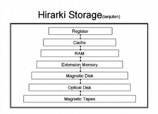
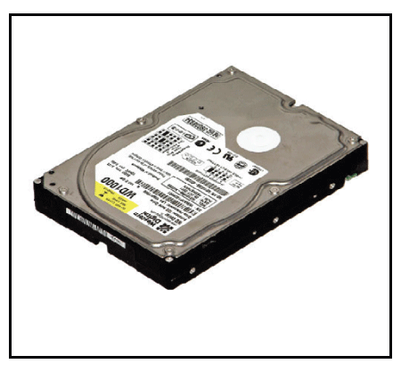
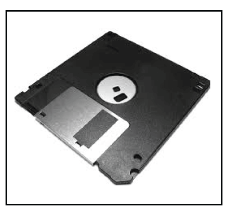
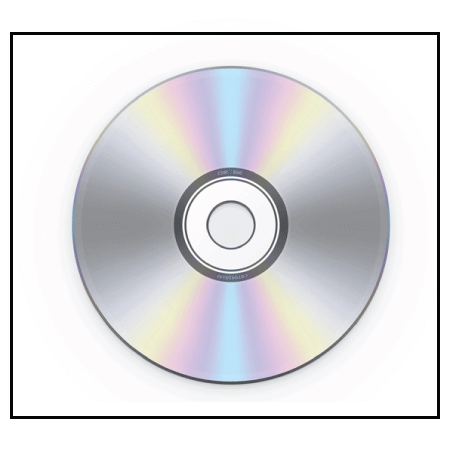
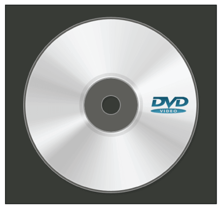
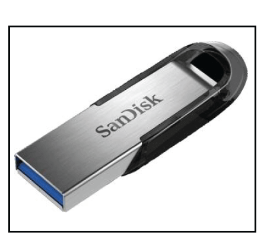

Memori komputer adalah perangkat keras (hardware) yang digunakan untuk menyimpan data berupa informasi atau instruksi yang bersifat sementara maupun permanen. Memori merupakan kumpulan dari storage units yang menyimpan data binary dalam bentuk bit. Setiap blok memori terdiri dari sejumlah kecil komponen, bagian-bagian kecil ini disebut sel. Berada di dalam central processor unit (CPU), memori menjadi komponen penting untuk mengoperasikan perangkat komputer. Setiap data dan program yang diproses oleh processor semuanya akan disimpan pada memori. Data yang bersifat sementara akan hilang secara otomatis jika perangkat dimatikan. Sedangkan data yang bersifat permanen akan tetap ada sekalipun aliran listrik dimatikan.
Menyimpan data dan instruksi
Memori komputer digunakan untuk menyimpan data dan instruksi yang sedang dijalankan oleh CPU atau unit pemrosesan pusat. Data dan instruksi disimpan dalam memori sehingga dapat diakses dengan cepat oleh CPU saat dibutuhkan.
Meningkatkan kinerja sistem
Memori yang cukup besar dapat meningkatkan kinerja sistem secara keseluruhan karena memungkinkan program untuk berjalan dengan lebih efisien. Dengan adanya memori yang cukup besar, CPU dapat mengakses data dan instruksi dengan lebih cepat dan mengurangi waktu yang dibutuhkan untuk menunggu data yang dibutuhkan
Meningkatkan kapasitas penyimpanan
Memori komputer memungkinkan sistem untuk menyimpan data dan instruksi dalam jumlah yang lebih besar daripada hanya mengandalkan CPU. Dengan adanya memori yang cukup besar, program dapat memuat dan menyimpan data lebih banyak, yang dapat meningkatkan kapasitas penyimpanan sistem.
Menyediakan ruang penyimpanan sementara
Selain menyimpan data dan instruksi, memori juga dapat digunakan untuk menyediakan ruang penyimpanan sementara untuk data yang sedang diolah oleh program. Sebagai contoh, ketika sebuah program sedang memproses gambar atau video, data dapat disimpan dalam RAM untuk diolah dengan lebih cepat.
Meningkatkan kinerja grafis
Memori komputer juga dapat digunakan untuk meningkatkan kinerja grafis pada komputer, seperti pada kartu grafis atau GPU. Kartu grafis biasanya dilengkapi dengan memori video yang berfungsi untuk menyimpan data grafis dan tekstur yang digunakan saat rendering.
Menyediakan ruang penyimpanan untuk sistem operasi
Sistem operasi membutuhkan ruang penyimpanan di dalam memori untuk berjalan. Dalam sistem operasi modern, seperti Windows atau Linux, bagian dari memori yang ditugaskan untuk menyimpan sistem operasi disebut sebagai kernel space.
Menyimpan aplikasi dalam mode penghematan daya
Ketika sistem komputer berada dalam mode penghematan daya, beberapa aplikasi atau program akan diatur untuk berjalan pada tingkat yang lebih rendah. Namun, memori masih digunakan untuk menyimpan program-program tersebut, sehingga aplikasi dapat dengan cepat diaktifkan kembali saat dibutuhkan.
Hierarki Memori atau Memory Hierarchy dalam arsitektur komputer adalah sebuah pedoman yang dilakukan oleh para perancang demi menyetarakan kapasitas, waktu akses, dan harga memori untuk tiap bitnya. Secara umum, hierarki memori terdapat dua macam yakni hierarki memori tradisional dan hierarki memori kontemporer.
Memori yang lebih kecil, lebih mahal dan lebih cepat diletakkan pada urutan teratas. Sehingga, jika diurutkan dari yang tercepat, maka urutannya adalah sebagai berikut:
register mikroprosesor. Ukurannya yang paling kecil tapi memiliki waktu akses yang paling cepat, umumnya hanya 1 siklus CPU saja.
Cache mikroprosesor, yang disusun berdasarkan kedekatannya dengan prosesor (level-1, level-2, level-3, dan seterusnya). Memori cache mikroprosesor dikelaskan ke dalam tingkatan-tingkatannya sendiri:
level-1: memiliki ukuran paling kecil di antara semua cache, sekitar puluhan kilobyte saja. Kecepatannya paling cepat di antara semua cache.
level-2: memiliki ukuran yang lebih besar dibandingkan dengan cache level-1, yakni sekitar 64 kilobyte, 256 kilobyte, 512 kilobyte, 1024 kilobyte, atau lebih besar. Meski demikian, kecepatannya lebih lambat dibandingkan dengan level-1, dengan nilai latency kira-kira 2 kali hingga 10 kali. Cache level-2 ini bersifat opsional. Beberapa prosesor murah dan prosesor sebelum Intel Pentium tidak memiliki cache level-2.
level-3: memiliki ukuran yang lebih besar dibandingkan dengan cache level-2, yakni sekitar beberapa megabyte tapi agak lambat. Cache ini bersifat opsional. Umumnya digunakan pada prosesor-prosesor server dan workstation seperti Intel Xeon atau Intel Itanium. Beberapa prosesor desktop juga menawarkan cache level-3 (seperti halnya Intel Pentium Extreme Edition), meski ditebus dengan harga yang sangat tinggi.
Memori utama: memiliki akses yang jauh lebih lambat dibandingkan dengan memori cache, dengan waktu akses hingga beberapa ratus siklus CPU, tapi ukurannya mencapai satuan gigabyte. Waktu akses pun kadang-kadang tidak seragam, khususnya dalam kasus mesin-mesin Non-uniform memory access (NUMA).
Memori primer juga dikenal sebagai memori utama sistem komputer yang berkomunikasi langsung di dalam CPU, auxiliary memory, dan cache memory. Memori primer digunakan untuk menyimpan program atau data saat prosesor aktif menggunakannya. Ketika sebuah program atau data diaktifkan untuk dieksekusi, prosesor pertama-tama memuat instruksi atau program dari memori sekunder ke memori primer, dan kemudian prosesor memulai eksekusi. Pengaksesan atau eksekusi data dari memori primer lebih cepat karena memiliki cache atau memori register yang memberikan respon lebih cepat, dan letaknya lebih dekat dengan CPU. Memori primer bersifat volatil, yang berarti data dalam memori dapat hilang jika tidak disimpan saat terjadi kegagalan daya. Memori primer lebih mahal daripada memori sekunder, dan kapasitas memori utama terbatas dibandingkan dengan memori sekunder. Memori utama dibagi lagi menjadi dua bagian:
RAM (Random Access Memory)
ROM (Read Only Memory)
RAM (Random Access Memory)
RAM (Random Access Memory) adalah salah satu jenis memori utama yang lebih cepat diakses langsung oleh CPU.Memori ini adalah perangkat keras dalam perangkat komputer untuk menyimpan sementara data, program atau hasil program. Digunakan untuk membaca/menulis data di memori sampai mesin bekerja. RAM bersifat volatil, artinya jika terjadi kegagalan daya atau komputer dimatikan, informasi yang tersimpan di RAM akan hilang. Semua data yang tersimpan dalam memori komputer dapat dibaca atau diakses secara acak setiap saat. RAM terdiri dari dua jenis, yaitu DRAM dan SRAM.
DRAM
DRAM (Dynamic Random-Access Memory) adalah jenis RAM yang digunakan untuk penyimpanan dinamis data dalam RAM.
Dalam DRAM, setiap sel membawa informasi satu bit. Sel terdiri dari dua bagian: kapasitor dan transistor. Ukuran kapasitor dan transistor sangat kecil, sehingga membutuhkan jutaan untuk disimpan dalam satu chip.
Oleh karena itu, chip DRAM dapat menyimpan lebih banyak data daripada chip SRAM dengan ukuran yang sama. Namun, kapasitor perlu terus diperbarui untuk menyimpan informasi karena DRAM tidak stabil. Jika daya dimatikan, penyimpanan data di memori hilang.
SRAM
SRAM (Static Random-Access Memory) adalah jenis RAM yang digunakan untuk menyimpan data statis di dalam memori. Artinya penyimpanan data di SRAM tetap aktif selama sistem komputer memiliki catu daya. Namun, data hilang di SRAM saat terjadi kegagalan daya.
ROM (Read Only Memory)
Memori primer jenis ini adalah memori read-only yang hanya dapat membaca informasi, data, atau program yang tersimpan, tetapi kita tidak dapat menulis atau mengubah apa pun.ROM berisi beberapa instruksi penting atau data program yang diperlukan untuk memulai atau mem-boot komputer.ROM bersifat non-volatile, artinya informasi yang disimpan tidak dapat hilang bahkan ketika daya dimatikan atau sistem dimatikan.
Ada lima jenis Read Only Memory:
MROM (Masked Read Only Memory)
MROM adalah jenis memori read-only tertua yang program atau datanya telah dikonfigurasi sebelumnya oleh pabrikan sirkuit terpadu pada saat manufaktur. Oleh karena itu, program atau instruksi yang disimpan dalam chip MROM tidak dapat diubah oleh pengguna.
PROM (Programmable Read Only Memory)
Ini adalah jenis ROM digital, di mana pengguna dapat menulis semua jenis informasi atau program hanya sekali. Pengguna dapat menulis konten atau program yang diinginkan hanya sekali menggunakan pemrogram PROM khusus atau perangkat burning PROM. Setelah itu, data atau instruksi tidak dapat diubah atau dihapus.
EPROM (Erasable and Programmable Read Only Memory)
ni adalah jenis ROM di mana data yang disimpan dapat dihapus dan diprogram ulang hanya sekali dalam memori EPROM. Memori ini adalah chip memori non-volatile yang menyimpan data saat tidak ada catu daya dan juga dapat menyimpan data selama minimal 10 hingga 20 tahun. Dalam EPROM, jika kita ingin menghapus data yang tersimpan dan memprogramnya kembali, pertama-tama kita harus melewatkan sinar ultraviolet selama 40 menit untuk menghapus data; setelah itu, data dibuat ulang di EPROM.
EEPROM (Electrically Erasable and Programmable Read Only Memory)
]
EEROM adalah ROM yang dapat dihapus secara elektrik dan dapat diprogram yang digunakan untuk menghapus data yang tersimpan menggunakan muatan listrik tegangan tinggi dan memprogramnya kembali. Memori ini juga merupakan memori non-volatile yang datanya tidak dapat dihapus atau hilang; bahkan listrik dimatikan. Di EEPROM, data yang disimpan dapat dihapus dan diprogram ulang hingga 10 ribu kali, dan data dihapus satu byte pada satu waktu.
FlashROM
Flash memory adalah chip memori penyimpanan non-volatil yang dapat ditulis atau diprogram dalam unit kecil yang disebut Block atau Sector. Flash memory adalah bentuk EEPROM dari memori komputer, dan isi atau data tidak dapat hilang ketika sumber listrik dimatikan. Hal ini juga digunakan untuk mentransfer data antara komputer dan perangkat digital.
Memori sekunder adalah ruang penyimpanan permanen untuk menampung sejumlah besar data. Memori sekunder juga dikenal sebagai memori eksternal yang mewakili berbagai media penyimpanan (hard drive, USB, CD, flash drive dan DVD) di mana data dan program komputer dapat disimpan dalam jangka panjang. Namun, lebih murah dan lebih lambat dari memori primer.
Berikut ini adalah karakteristik memori sekunder:
Adapun jenis-jenis memori sekunder adalah sebagai berikut:
Harddisk

Hard disk adalah perangkat penyimpanan permanen komputer. Harddisk bersifat disk non-volatil yang secara permanen menyimpan data, program, dan file, dan tidak dapat kehilangan data penyimpanan saat sumber daya komputer dimatikan.
Floppy Disk (Disket)

Memori ini juga dikenal sebagai Floppy Diskette yang datang dalam tiga ukuran seperti 8 inci, 5,5 inci dan 3,5 inci. Data yang tersimpan dari floppy disk dapat diakses melalui floppy disk drive. Selain itu, floppy disk adalah satu-satunya cara agar program baru dapat diinstal pada komputer atau cadangan informasi.
Jenis memori ini adalah jenis perangkat penyimpanan portabel tertua, yang dapat menyimpan data hingga 1,44 MB. Karena sebagian besar program berukuran lebih besar, diperlukan banyak disket untuk menyimpan data dalam jumlah besar. Oleh karena itu, disket saat ini tidak digunakan lagi karena penyimpanan memorinya yang sangat rendah.
CD (Compact Disc)

CD adalah perangkat penyimpanan disk optik, singkatan dari Compact Disc. Ini adalah perangkat penyimpanan yang digunakan untuk menyimpan berbagai jenis data seperti audio, video, file, OS, file Back-Up, dan informasi lain yang berguna untuk komputer.
CD-ROM (Compact Disc Read Only Memory)
Digunakan untuk menyimpan file untuk distribusi massal seperti CD audio, perangkat lunak, dan permainan komputer pada saat pembuatan. Pengguna hanya dapat membaca data, teks, musik, video dari disk, tetapi mereka tidak dapat mengubah atau melakukan burn CD.
CD-R (Compact Disc Recordable):
Jenis Compact Disc yang digunakan untuk menulis satu kali oleh pengguna; setelah itu, tidak dapat diubah atau dihapus.
CD-RW (Compact Disc Rewritable):
Ini adalah disk CD yang dapat ditulis ulang, sering digunakan untuk menulis atau menghapus data yang disimpan.
DVD

DVD adalah perangkat penyimpanan cakram optik, singkatan dari Digital Video Display atau Digital Versatile Disc. Memiliki ukuran yang sama dengan CD tetapi dapat menyimpan jumlah data yang lebih besar daripada compact disc.DVD dikembangkan pada tahun 1995 oleh Sony, Panasonic, Toshiba dan Philips empat perusahaan elektronik.
DVD drive dibagi menjadi tiga jenis, seperti DVD ROM (Read Only Memory), DVD R (Recordable) dan DVD RW (Rewritable atau Erasable).
DVD dapat menyimpan berbagai format data seperti audio, video, gambar, perangkat lunak, sistem operasi, dll. Kapasitas penyimpanan data dalam DVD adalah 4,7 GB hingga 17 GB.
Blu-ray Disk (BD)
Blu Ray adalah perangkat penyimpanan cakram optik yang digunakan untuk menyimpan sejumlah besar data atau rekaman video definisi tinggi dan memutar file media lainnya.
Untuk membaca data yang tersimpan dari Blu-ray Disk dapat menggunakan teknologi laser. Memori sekunder jenis ini dapat menyimpan lebih banyak data dengan kepadatan yang lebih besar dibandingkan dengan CD/DVD.
Pen drive

Pen drive adalah perangkat portabel yang digunakan untuk menyimpan data secara permanen. Perangkat penyimpanan ini juga dikenal sebagai USB flash drive.Hal ini memungkinkan pengguna untuk menyimpan dan mentransfer data seperti audio, video, gambar, dll dari satu komputer ke USB pen drive. Kapasitas penyimpanan pen drive dari 64 MB hingga 128 GB atau lebih.
Memori cache adalah memori komputer berbasis chip berukuran kecil yang terletak di antara CPU dan memori utama.Memori jenis ini lebih cepat, berkinerja tinggi dan memori sementara untuk meningkatkan kinerja CPU. Memori cache menyimpan semua data dan instruksi yang sering digunakan oleh CPU komputer.
Hal ini juga mengurangi waktu akses data dari memori utama. Cache lebih cepat dari memori utama, dan kadang-kadang disebut juga memori CPU karena sangat dekat dengan chip CPU.
Berikut ini adalah tingkatan dari memori cache:
L1 Cache: Cache L1 juga dikenal sebagai cache onboard, internal, atau primer. Itu dibangun dengan bantuan CPU. Kecepatannya sangat tinggi, dan ukuran cache L1 bervariasi dari 8 KB hingga 128 KB.
L2 Cache: Dikenal sebagai cache eksternal atau sekunder, yang membutuhkan waktu akses cepat untuk menyimpan data sementara. L2 cache dibangun ke dalam chip terpisah di motherboard, tidak dibangun ke dalam CPU seperti level L1. Ukuran cache L2 mungkin 128 KB hingga 1 MB.
L3 Cache:Level cache L3 umumnya digunakan dengan kinerja dan kapasitas komputer yang tinggi. Itu dibangun ke dalam motherboard. Kecepatannya sangat lambat, dan ukuran maksimalnya mencapai 8 MB.
Memori register adalah tempat penyimpanan sementara untuk menyimpan dan mentransfer data dan instruksi ke komputer. Memori register termasuk memori terkecil dan tercepat dari komputer. Ini adalah bagian dari memori komputer yang terletak di CPU sebagai bentuk register. Memori register berukuran 16, 32 dan 64 bit. Ini menyimpan sementara instruksi data dan alamat memori yang berulang kali digunakan untuk memberikan respons yang lebih cepat ke CPU.
Memori komputer adalah jenis perangkat keras yang digunakan untuk menyimpan data daninformasi. Ini adalah bagian penting dari komputer yang memungkinkan komputer untukmenyimpan dan mengakses data yang dibutuhkan untuk menjalankan aplikasi dan sistemoperasi. Memori komputer berfungsi untuk menyimpan data sementara selama komputerdigunakan, sehingga komputer dapat memproses dan mengakses data dengan cepat. Kapasitasmemori komputer mempengaruhi kinerja komputer, sehingga memori dengan kapasitas lebihbesar biasanya menghasilkan kinerja yang lebih baik.Secara umum, memori komputermerupakan bagian penting dari komputer yang membantu mempercepat kinerja danmemungkinkan komputer untuk menyimpan dan mengakses data yang dibutuhkan
berikut ini perkembangan memori dan tahun ke tahun:
RAM (1968)
DRAM (1970)
FP RAM (1987)
EDO RAM (1995)
SDRAM PC66 (1996)
SDRAM PC100 (~1998)
Sebagaimana kita tahu, memori internal memiliki fungsi sebagai pengingat, penyimpanan data atau program yang bersifat sementara. Sehingga, jika komputer mati maka data akan hilang. Berikut ini beberapa fungsi memori dan cara kerjanya:
Optimalisasi memori adalah aspek penting dalam pengembangan perangkat lunak, terutama ketika bekerja dengan kode berorientasi objek. Pemrograman berorientasi objek (OOP) adalah paradigma yang mengatur data dan perilaku ke dalam unit yang dapat digunakan kembali dan modular yang disebut objek. Namun, membuat dan memanipulasi objek dapat menghabiskan banyak memori, yang dapat memengaruhi performa dan skalabilitas aplikasi Anda. Dalam artikel ini, Anda akan mempelajari beberapa tip dan teknik untuk mengoptimalkan penggunaan memori dalam kode berorientasi objek, seperti memilih struktur data yang tepat, menghindari pembuatan objek yang tidak perlu, menggunakan alat manajemen memori, dan menerapkan pola desain.
Pilih struktur data yang tepat
Salah satu langkah pertama untuk mengoptimalkan memori dalam kode berorientasi objek adalah memilih struktur data yang tepat untuk domain masalah Anda. Struktur data adalah cara menyimpan dan mengatur data dalam memori, seperti array, daftar, peta, kumpulan, dll. Struktur data yang berbeda memiliki trade-off yang berbeda dalam hal konsumsi memori, kecepatan akses, dan operasi. Misalnya, array cepat dan kompak, namun memiliki ukuran tetap dan tidak dapat bertambah atau menyusut secara dinamis. Daftar bersifat fleksibel dan dinamis, namun menggunakan lebih banyak memori dan dapat lebih lambat untuk dilintasi. Peta dan set berguna untuk menyimpan pasangan nilai kunci atau elemen unik, namun juga dapat menggunakan lebih banyak memori dan memerlukan fungsi hashing. Oleh karena itu, Anda harus selalu mempertimbangkan karakteristik dan persyaratan data Anda sebelum memilih struktur data.
Hindari pembuatan objek yang tidak perlu
Cara lain untuk mengoptimalkan memori dalam kode berorientasi objek adalah dengan menghindari pembuatan objek yang tidak diperlukan atau digunakan. Misalnya, Anda harus menghindari pembuatan objek di dalam loop, karena hal ini dapat membuat banyak objek sementara yang akan dibuang dengan cepat dan menambah tekanan pada pengumpul sampah. Anda juga harus menghindari pembuatan objek yang berlebihan atau diduplikasi, seperti string yang dapat digunakan kembali atau konstanta yang dapat didefinisikan satu kali. Selain itu, Anda harus menghindari pembuatan objek yang terlalu besar atau kompleks, seperti array atau koleksi yang memiliki lebih banyak elemen daripada yang diperlukan atau objek yang memiliki lebih banyak bidang atau metode daripada yang dibutuhkan. Sebaliknya, Anda harus menggunakan tipe sederhana dan primitif bila memungkinkan, atau menggunakan kumpulan objek atau pola kelas terbang untuk menggunakan kembali objek yang ada.
Gunakan alat manajemen memori
Cara ketiga untuk mengoptimalkan memori dalam kode berorientasi objek adalah dengan menggunakan alat manajemen memori yang dapat membantu Anda memantau dan menganalisis penggunaan memori dan mengidentifikasi potensi masalah atau kebocoran. Alat manajemen memori adalah aplikasi perangkat lunak atau pustaka yang dapat memberikan informasi dan statistik tentang alokasi, konsumsi, dan dealokasi memori Anda, serta mendeteksi dan melaporkan kesalahan atau anomali memori. Beberapa contoh alat manajemen memori adalah profiler, debugger, penganalisis heap, pendeteksi kebocoran memori, dll. Dengan menggunakan alat ini, Anda dapat memperoleh wawasan tentang bagaimana kode berorientasi objek memengaruhi kinerja memori dan di mana Anda dapat meningkatkan atau mengoptimalkannya.
Copyrights © 2023 - Muhammad faishol akbar , All Rights Reserved.